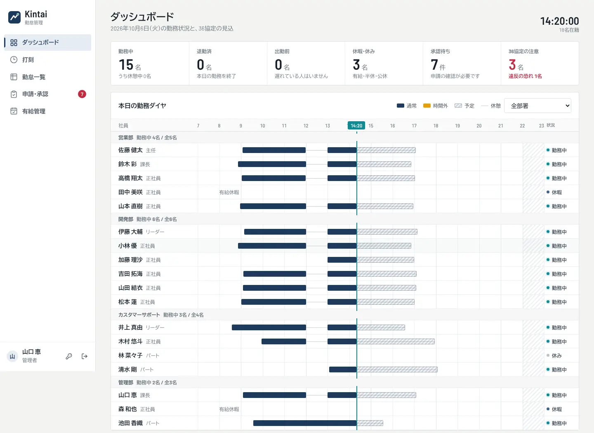
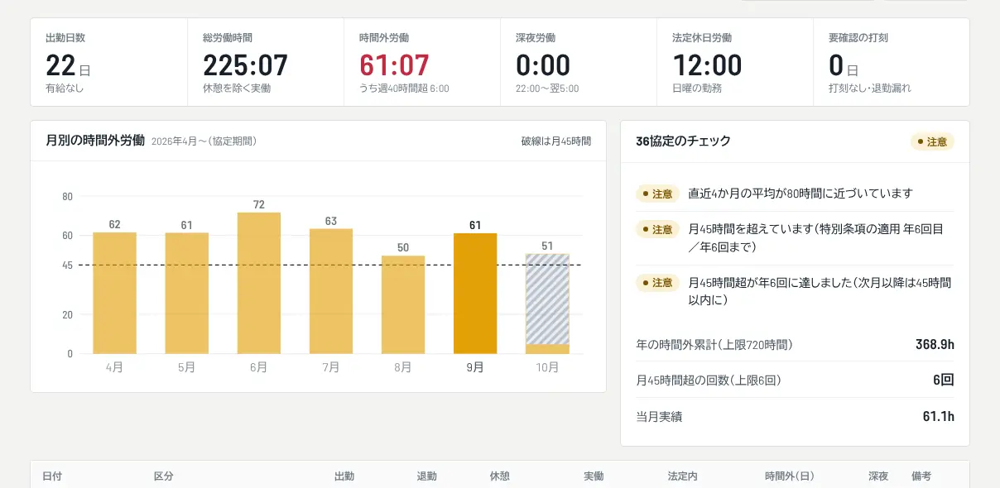
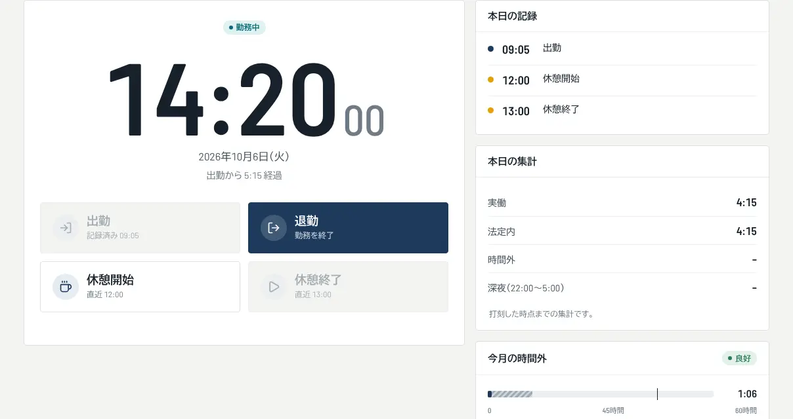

36協定の上限を、見込つきでチェック
月別の時間外労働をグラフで確認でき、特別条項を使った回数や、年の累計も一目で分かります。
- 月45時間への接近を、超える前に警告
- 特別条項の適用回数（年6回まで）を自動で数える
- 会社ごとに、特別条項の有無・協定の起算月を設定
打刻から月次集計、36協定の月末見込まで。社員が10名でも200名でも、総務の手作業を減らします。1人あたり月額{{PRICE}}円（税抜）、初期費用はかかりません。

画面はサンプルデータです。実在の人物・企業とは関係ありません。
残業時間の上限は、超えてから気づいては遅い問題です。{{BRAND_NAME}}は、月の途中から見込を出して、先に知らせます。
日8時間・週40時間を超えた時間、深夜、法定休日の労働を、打刻から自動で集計します。休憩を差し引いた実働で計算します。
月45時間・年360時間、特別条項の年720時間・年6回、単月100時間未満、2〜6か月平均80時間。上限に近づいた社員を、月末の見込つきで一覧します。
夜をまたぐ勤務、1か月・1年・1週間単位の変形労働時間制、フレックスタイム制（清算期間3か月まで）の時間外を、法令の判定順どおりに集計します。シフトの登録、締め日の設定にも対応しています。
残業・休日出勤・有給・打刻修正の申請を、ひとつの画面で承認します。有給の付与日数と、年5日の取得義務の進み具合も確認できます。
月別の時間外労働をグラフで確認でき、特別条項を使った回数や、年の累計も一目で分かります。

出勤・退勤・休憩を、パソコンでもスマートフォンでも記録できます。時刻は端末ではなくサーバーが記録するので、端末の時計を変えても改ざんできません。

社員の登録は、ExcelのCSVでまとめて取り込めます。
会社名とメールアドレスだけ。企業IDを決めれば、すぐに使えます。
テンプレートに社員を入力して取り込み。一時パスワードは、本人が初回ログインで変更します。
社員にログイン方法を伝えれば、その日から打刻できます。
在職中の社員の人数で、月額が決まります。月の途中で増えたり退職したりした場合は、日割りで精算されます。
例: 30名の場合、月額 ¥{{PRICE_30}}（税抜）。消費税は別途かかります。
次の機能には、まだ対応していません。必要な場合は、先に無料トライアルで運用に合うかをお試しください。
はい。社員ごとに社員IDとパスワードでログインして、打刻・申請を行います。管理者がまとめて登録できます。メールアドレスを持たないパート・アルバイトの方も、社員IDだけで利用できます。
データは会社ごとに別のデータベースに分けて保存しています。ログインは企業ID・社員ID・パスワードで行い、ログインした会社のデータベースにだけ接続する設計です。
退職処理をしても、在籍していた月の勤怠・申請の記録は残ります。退職者は課金の人数に数えません。
解約後は閲覧のみとなり、管理画面から全データを書き出せます。保管期間と削除については、利用規約をご確認ください。
祝日・割増・上限などの計算ルールは、法令の改正にあわせて更新します。ただし、集計と警告は参考情報であり、法的な判断を保証するものではありません。実際の労務管理は、社会保険労務士などにもご相談ください。
お支払いごとに、請求書・領収書をStripeの管理ページからダウンロードできます。